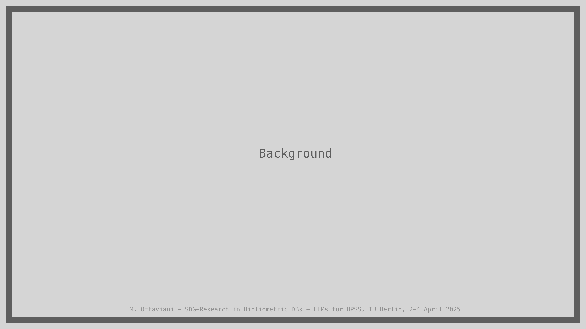
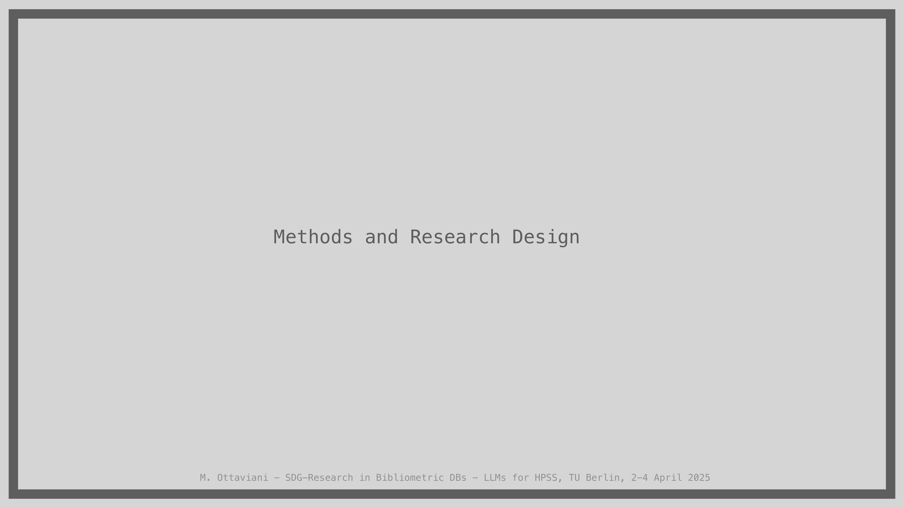
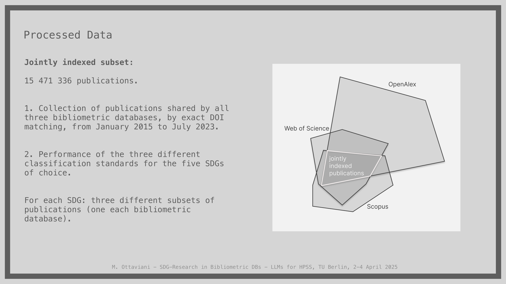
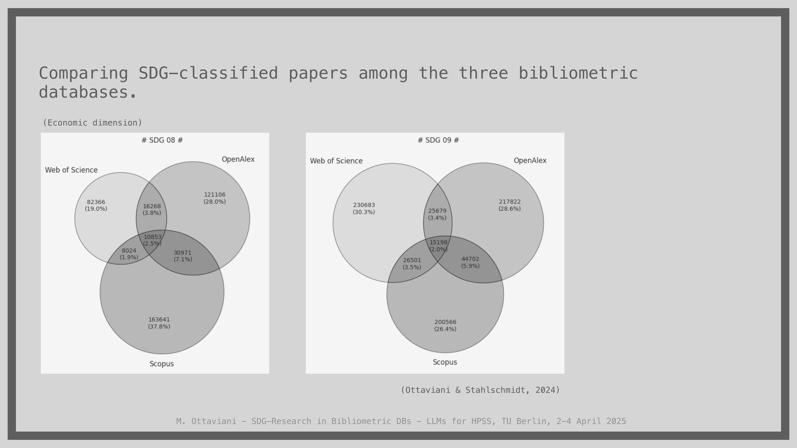

9 The Representation of SDG-Related Research in Bibliometric Databases: A Conceptual Inquiry via LLMs
Overview
This chapter details a conceptual inquiry into the representation of Sustainable Development Goal (SDG)-related research within bibliometric databases, employing Large Language Models (LLMs) to detect inherent biases. Ottaviani and Stahlschmidt aimed to utilise LLMs as a technological tool for assessing biases in publications classified across three prominent bibliometric databases: Web of Science, Scopus, and OpenAlex. Their study highlights the critical, yet performative, role of these databases in the sociology of science, acknowledging their influence on academic behaviour, funding, and policy, whilst also noting their susceptibility to political and commercial interests.
The research team’s methodology involved training a pre-existing, open-source LLM, DistilGPT2, on a shared corpus of over 15 million publications classified by the three databases. This approach circumvented the resource-intensive process of training an LLM from scratch, whilst ensuring minimal prior semantic knowledge. The project specifically focused on five SDGs related to socio-economic inequalities: SDG4 (Quality Education), SDG5 (Gender Equality), SDG10 (Reduced Inequalities), SDG8 (Decent Work and Economic Growth), and SDG9 (Industry, Innovation, and Infrastructure).
A key component of the research design involved crafting 80-120 specific prompts for each SDG, derived from their respective targets, to serve as a benchmark for compliance and bias detection. The fine-tuned LLM processed these prompts using various decoding strategies (top-k, nucleus, contrastive search), generating responses from which noun phrases were extracted. Analysis of these noun phrases across four dimensions—locations, actors, data/metrics, and focuses—revealed a systematic overlook in the bibliometric data. The LLM’s responses consistently neglected disadvantaged categories of individuals, the poorest countries, and sensitive, underrepresented topics explicitly addressed by SDG targets, instead concentrating on economically powerful and highly developed nations. This finding underscores the decisive impact of seemingly objective science-informed practices, such as bibliometric classification, on research representation and, consequently, on policy and resource allocation. The authors acknowledge limitations, including the general framework and the high sensitivity of LLMs to architectural choices, training data, and decoding strategies.
9.1 Research Background and Aims

Ottaviani and Stahlschmidt embarked on this project with the primary aim of employing Large Language Models (LLMs) as a technological instrument to discern biases. Specifically, they sought to identify biases originating from publications classified within three prominent bibliometric databases. This foundational objective guided their subsequent methodological development.
9.2 SDG Classification in Databases

Bibliometric databases function as critical digital infrastructures, enabling extensive bibliometric analyses and impact assessments across the scientific community. These systems, however, exhibit a performative nature, fundamentally shaped by particular understandings of the scientific landscape and inherent value attributions, as scholarly works by Whitley (2000) and Winkler (1988) demonstrate. Consequently, they exert considerable influence over the conduct of academics, researchers, funding institutions, and policymakers alike. Crucially, these databases also reflect and respond to diverse political and commercial interests.
In recent years, leading bibliometric platforms, including Web of Science, Scopus, and OpenAlex, have implemented classifications designed to align publications with the United Nations Sustainable Development Goals (SDGs). Nevertheless, prior research, notably by Armitage et al. (2020), has revealed that SDG labelling practices across different providers—such as Elsevier, Bergen, and Aurora—produce markedly divergent results, exhibiting very limited overlap. These inconsistencies in classification can distort perceptions of research priorities, thereby potentially affecting resource allocation and policy decisions, often influenced by underlying political and commercial agendas.
9.3 Case Study: SDGs in Bibliometric Data

This case study, conducted by Ottaviani and Stahlschmidt (2024), specifically investigates the aggregated effects on the representation of SDG-related research within bibliometric databases following the introduction of LLM-based tools. The authors adopted a methodological approach that involved deploying “little” pre-trained Large Language Models, notably DistilGPT2. They trained these models independently on distinct subsets of publication abstracts, each corresponding to the SDG classifications derived from various bibliometric databases. This LLM technology served a dual purpose: firstly, as a detector of inherent biases within the data; and secondly, as a proof-of-concept exercise demonstrating its potential for automating information extraction to inform research-related decision-making processes.
9.4 Chain of Dependencies

The research delineates a partial chain of dependencies, illustrating the intricate relationships within the science-policy interface. Initially, SDG classification directly defines the scope and nature of “Research” on SDGs. Subsequently, a diverse array of stakeholders, including researchers, Small and Medium-sized Enterprises (SMEs), governments, and various intermediate figures, actively process this SDG-focused research. This processed research then critically informs “Decision-making to align with SDGs,” which, in turn, directly impacts “Socioeconomic inequalities.”
Crucially, the study positions the LLM as a “detector of ‘biases’” operating at the level of “Research” on SDGs. The “Introduction of LLM in Research Policy” emerges as a direct consequence of this bias detection, and this intervention ultimately influences “Socioeconomic inequalities.” Fundamentally, LLMs possess the capacity to alter the metadata associated with SDG research, thereby profoundly influencing the advice provided, choices made, indicators developed, and measures implemented within policy frameworks.
9.5 Actors and SDG Selection
The study focused on three principal bibliometric databases: Web of Science, a proprietary platform from Clarivate (US); Scopus, another proprietary service provided by Elsevier (UK); and OpenAlex, an open-access resource formerly associated with Microsoft (US). The authors strategically selected five Sustainable Development Goals to specifically model socio-economic inequalities. These included three SDGs representing the equity or socio dimension: SDG4 (Quality Education), SDG5 (Gender Equality), and SDG10 (Reduce Inequalities). Additionally, two SDGs were chosen to represent the economic and technological development dimension: SDG8 (Decent Work and Economic Growth) and SDG9 (Industry, Innovation, and Infrastructure).
9.6 Processed Data
The research team processed a substantial dataset, comprising a jointly indexed subset of 15,471,336 publications. They meticulously collected these publications by identifying those shared across all three bibliometric databases—Web of Science, Scopus, and OpenAlex—through precise DOI matching. This collection spanned a timeframe from January 2015 to July 2023. The project then assessed the performance of the three distinct classification standards for the five selected SDGs. Consequently, for each SDG, three separate publication subsets emerged, each attributed to a specific bibliometric database. This rigorous approach, applying classification solely to the shared corpus, established a robust benchmark for subsequent comparative analysis.
9.7 SDG Classification: Socio Dimension
Initial results from the comparative analysis of SDG-classified papers, focusing on the socio dimension, strongly corroborate the findings of Armitage (2020), demonstrating a consistently minimal overlap in SDG labelling across the bibliometric databases.
For SDG 04, pertaining to Quality Education:
Web of Science identified 124,359 publications (19.1%).
OpenAlex identified 218,907 (33.6%).
Scopus identified 339,063 (52.2%).
The overlaps comprised:
59,002 (9.0%) between Web of Science and OpenAlex.
35,733 (5.5%) between Web of Science and Scopus.
35,733 (5.5%) between OpenAlex and Scopus.
A mere 46,711 (7.2%) across all three platforms.
Regarding SDG 05, Gender Equality:
Web of Science classified 37,324 publications (57.4%).
OpenAlex classified 71,727 (9.4%).
Scopus classified 82,273 (12.7%).
The overlaps were similarly low:
31,210 (4.8%) for Web of Science and OpenAlex.
26,377 (4.1%) for Web of Science and Scopus.
34,898 (5.4%) for OpenAlex and Scopus.
38,066 (12.1%) for all three.
A notable observation emerged for SDG 05: whilst Scopus contained publications relevant to this goal, it often did not classify them as such. Furthermore, Web of Science classified approximately 10% of its SDG 05 publications from the field of mathematics, including topics such as geometrical differential equations, suggesting potential misclassification or a failure to capture relevant content comprehensively.
For SDG 10, focused on Reducing Inequalities:
Web of Science identified 95,460 publications (12.2%).
OpenAlex identified 213,419 (43.3%).
Scopus identified 236,665 (30.2%).
The overlaps were:
25,277 (3.2%) for Web of Science and OpenAlex.
22,540 (2.9%) for Web of Science and Scopus.
18,850 (2.4%) for OpenAlex and Scopus.
Only 10,853 (1.3%) across all three databases.
These figures consistently highlight the significant discrepancies in how different bibliometric databases classify SDG-related research.
9.8 SDG Classification: Economic Dimension
The comparative analysis extended to the economic dimension of SDG-classified papers, revealing similar patterns of limited overlap.
For SDG 08, focusing on Decent Work and Economic Growth:
Web of Science identified 82,366 publications (19.0%).
OpenAlex identified 121,106 (28.0%).
Scopus identified 183,641 (37.8%).
The overlaps comprised:
16,268 (3.8%) for Web of Science and OpenAlex.
8,020 (1.9%) for Web of Science and Scopus.
39,071 (9.0%) for OpenAlex and Scopus.
10,853 (2.5%) across all three databases.
Similarly, for SDG 09, concerning Industry, Innovation, and Infrastructure:
Web of Science classified 230,883 publications (30.3%).
OpenAlex classified 217,822 (28.6%).
Scopus classified 200,566 (26.4%).
Overlaps included:
25,679 (3.4%) for Web of Science and OpenAlex.
26,501 (3.5%) for Web of Science and Scopus.
44,702 (5.9%) for OpenAlex and Scopus.
15,186 (2.0%) for all three.
These figures consistently underscore the significant discrepancies in how different bibliometric databases classify SDG-related research, even within the economic dimension.
9.9 LLM Technology and Key Findings
Ottaviani and Stahlschmidt modelled the Large Language Model (LLM) technology with a specific objective: to develop an LLM whose knowledge base originated exclusively from publications classified under a particular Sustainable Development Goal by a given bibliometric database. Recognising the substantial resources required to train an LLM from scratch, they adopted a pragmatic compromise: fine-tuning an existing, pre-trained, open-source LLM. DistilGPT2 emerged as the chosen model, primarily due to its fundamental architecture and minimal prior knowledge, which ensured the absence of pre-existing semantic understanding concerning either publications or prompts.
The primary finding from this investigation highlights a systematic overlook within the data, specifically regarding certain actors, the world’s poorest countries, and various underrepresented topics. However, the authors acknowledge several limitations. Their framework remains general, implying that specific applied cases might yield different outcomes. Moreover, LLMs inherently demonstrate high sensitivity to their underlying model architecture, the characteristics of their training data, the chosen (hyper-)parameters, and the decoding strategies employed. Whilst Ottaviani and Stahlschmidt partially accounted for training data variability by incorporating three distinct databases, and for decoding strategies by utilising three methods from existing literature, the need for more advanced LLM architectures persists.
9.10 SDG 4: Quality Education Targets
Sustainable Development Goal 4 mandates the assurance of inclusive and equitable quality education, alongside the promotion of lifelong learning opportunities for all. A series of specific targets underpins this overarching goal, each outlining a crucial aspect of educational development.
For instance:
Target 4.1 stipulates that by 2030, all girls and boys must complete free, equitable, and high-quality primary and secondary education, leading to demonstrably relevant and effective learning outcomes.
Target 4.2 focuses on ensuring universal access to quality early childhood development, care, and pre-primary education by the same year, preparing children for primary schooling.
Target 4.3 aims for equal access to affordable and quality technical, vocational, and tertiary education, including university, for all women and men by 2030.
Target 4.4 seeks to substantially increase the number of young people and adults possessing relevant skills, particularly technical and vocational proficiencies, for employment, decent work, and entrepreneurship.
Target 4.5 addresses the elimination of gender disparities in education and guarantees equal access to all educational levels and vocational training for vulnerable populations, including individuals with disabilities, indigenous peoples, and children in precarious situations.
Target 4.6 commits to ensuring that all youth and a significant proportion of adults, irrespective of gender, achieve literacy and numeracy by 2030.
These targets collectively form the framework of the 2030 Agenda for SDGs, as defined by the United Nations.
9.11 Prompts for Benchmarking
To establish a robust benchmarking system, Ottaviani and Stahlschmidt meticulously crafted prompts for each Sustainable Development Goal. Each SDG comprises a comprehensive list of between eight and twelve specific targets. For every individual target, the authors systematically developed ten diverse questions, or prompts, with each question designed to explore a distinct facet of that target. This rigorous process yielded a specific set of 80 to 120 prompts for each SDG, collectively serving as a critical benchmark or standard for both defining compliance with the SDGs and identifying potential biases within the data. For instance, prompts such as, “How can countries ensure that all girls and boys complete free, equitable and quality primary and secondary education by 2030?” interrogated Target 4.1, which aims to ensure that all girls and boys complete free, equitable, and quality primary and secondary education by 2030.
9.12 Research Design: Database and SDG Specificity
The research design meticulously outlines the process for analysing SDG-related content within bibliometric databases. The workflow commenced with an initial input comprising a set of abstracts, each classified according to a specific SDG and originating from a particular database. The authors then applied a crucial fine-tuning process to this dataset, utilising the DistilGPT-2 model. The output of this fine-tuning was a specialised “Fine-tuned DistilGPT-2” model, tailored to each specific SDG and database combination.
Subsequently, a dedicated set of prompts, crafted specifically for each SDG, served as input to the fine-tuned LLM. To generate diverse and relevant outputs, Ottaviani and Stahlschmidt applied three distinct decoding strategies: top-k, nucleus, and contrastive search. The LLM produced corresponding responses for each SDG and database, categorised by the decoding strategy employed. A final post-processing step involved applying a “prompts’ words filter” to these responses, ultimately yielding a refined set of noun phrases pertinent to each SDG and database.
9.13 Illustrative Example: SDG 4 Analysis
As an illustrative example, the analysis of SDG 4 involved a systematic method of matching noun phrases, extracted from the LLM’s responses, directly against the specific SDG targets. Ottaviani and Stahlschmidt employed four critical data dimensions for this analysis: Locations, Actors, Data/Metrics, and Focuses. For each SDG, this comprehensive approach facilitated a dual assessment: firstly, evaluating the degree of compliance with its stated targets; and secondly, identifying any inherent biases within the data. Notably, the analysis consistently revealed distinct differences across the various bibliometric databases. A structured table organised these findings, categorising them by unique databases and indicating which targets were addressed or not addressed across the dimensions of locations, actors, data/metrics, and focuses.
9.14 Systematic Overlooks by the LLM
Despite the LLM’s stimulation, its responses consistently overlooked several critical areas, revealing systematic biases within the underlying data. Geographically, the model rarely addressed African countries, with the notable exception of South Africa, and largely ignored other developing nations, including China (though this observation carried a degree of uncertainty). The model also largely overlooked least developed countries and small island developing states.
In terms of human actors, the LLM systematically overlooked vulnerable populations, persons with disabilities, indigenous peoples, and children in vulnerable situations. Furthermore, the model failed to adequately focus on several key thematic areas explicitly outlined in the SDGs. These included vocational training, scholarships, the establishment of safe, non-violent, inclusive, and effective educational environments, the promotion of sustainable lifestyles, human rights, the cultivation of a culture of peace and non-violence, global citizenship, and the appreciation of cultural diversity. Crucially, the LLM also neglected to address the fundamental concepts of free primary and secondary education, and tertiary education.
9.15 Cross-SDG Considerations
Across the five Sustainable Development Goals analysed, several consistent patterns emerged. Geographically, the LLM’s responses rarely addressed least developed countries, with South-Saharan Africa, for instance, receiving minimal attention in relation to SDG8. The United States maintained an undeniable dominance in location mentions, followed by South Africa and China as the most frequently cited countries, with the UK and Australia also featuring prominently.
Regarding metrics, the LLM’s output included references to various data sources, such as the Demographic and Health Surveys (DHS) and the World Values Survey (WVS), alongside mentions of general metrics, indicators, and benchmarks. The discussed research methodologies spanned theoretical frameworks, empirical studies, thematic analysis, market dynamics, and macroeconomics. However, concerning human actors, the analysis consistently revealed a systematic overlook of discriminated and vulnerable categories across all SDGs. Furthermore, whilst the LLM addressed some SDG-specific focuses, it notably omitted the most sensitive topics, such as human trafficking, human exploitation, and migration.
9.16 Case Study Summary
The case study’s findings reveal a critical insight: the integration of Large Language Models as an analytical AI tool, positioned between SDG classification and the policymaking process, exposes a systematic oversight within the scientific publications classified by SDGs. This oversight consistently neglects the most disadvantaged categories of individuals, the world’s poorest countries, and crucial underrepresented topics explicitly targeted by the SDGs. Conversely, the analysis demonstrates that economic superpowers and highly developing nations receive disproportionate attention. These results unequivocally highlight the profound and decisive impact of seemingly objective, science-informed practices, such as the bibliometric classification of SDGs, on the representation of global challenges.
The authors acknowledge several limitations. The LLM’s performance exhibits high sensitivity to its model architecture, the characteristics of its training data (though partially mitigated by incorporating three distinct databases), the chosen (hyper-)parameters, and the decoding strategies employed (which were also partially accounted for). Furthermore, the research operates within a general framework, suggesting that its applicability to highly specific contexts may require further investigation. Future work should therefore explore the development of more sophisticated LLM architectures to address these sensitivities.